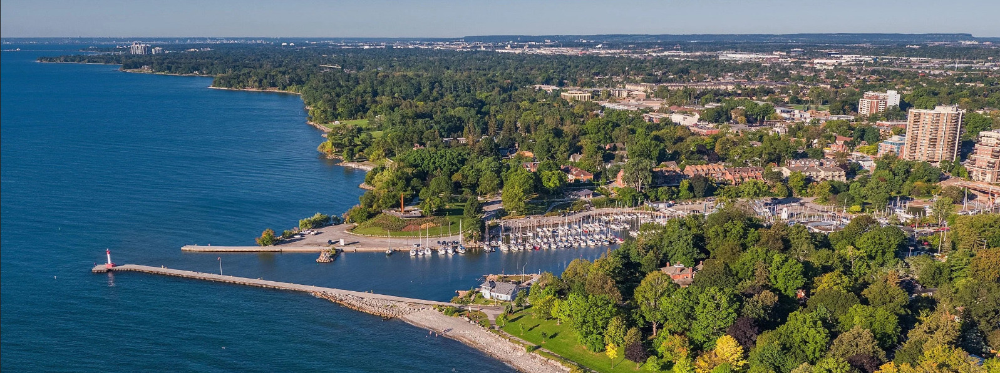

Downtown Oakville Day Trip
Downtown Oakville is a picturesque and vibrant destination that offers a perfect blend of historic charm and modern sophistication and only a 5 minute drive away from the suggested hotels! Nestled along the shores of Lake Ontario, this upscale district is known for its tree-lined streets, beautiful waterfront views, and a delightful mix of boutique shops, gourmet dining, and cultural attractions.
This will be the most calm, closest and lest expensive trip we will be offering while everyone is in Canada. It is also less rigid in schedule as people can come and go easily as they please.
General Day Plan
Like noted above, the Downtown Oakville trip is much more relaxed in timing than the other trips and thus this general day plan is just a suggestion but anyone is free to join in on the trip at anytime they wish to and leave whenever they want without worry.
Getting to Downtown Oakville
Getting to Downtown Oakville from the two hotels we have suggested is easy! There are three options:
-
Uber/Taxi: An uber from either of the suggested hotels to downtown Oakville costs approximately $9 CAD.
-
Bus: To take the bus you would have to get to the Oakville GO Station to get on the 14A or 14 bus and then get off approximately ten minutes later at the Church & Dunn stop.The buses come approximately every twenty minutes and the fare would be about $4 per person and you can tap your credit or debit card on the reader to pay.
-
Walking: Getting to Downtown Oakville a very strightforward walk and fairly quick, approximately 33 minutes. To look at the map click here.
Suggested Activities
Downtown Oakville has its charms and quite a few things to do, good place to relax.
-
Crack Pot Studio: this is a creative haven where visitors can unleash their artistic side. The studio offers pottery painting, where you can choose from a wide selection of ceramics to paint and personalize. Whether you're a seasoned artist or a beginner, Crack Pot Studio provides all the materials and guidance needed to create a unique piece. It's a fantastic activity for those looking to spend some quality time being creative.
-
Waterfront: The Oakville waterfront looks out over Lake Ontario and on clear days you can see Toronto and the United States. Lakeside park is a great place to relax and walk the waterfront and to get some great pictures walk out to the Oakville Lighthouse. Across the bridge you'll find Tannery park where you can continue a walk along the waterfront, read about history and stare at the beautiful million dollar mansions.
-
The Oakville Museum: This historical lakefront estate-turned-museum offers tours, exhibition and local history programs.
-
Oakville Galleries: contemporary art museum located in Oakville, Ontario. With two locations—one in Gairloch Gardens and the other in Centennial Square—the galleries showcase a diverse range of thought-provoking exhibitions by both Canadian and international artists. The galleries are a cultural hub, providing a space where visitors can explore and appreciate modern art in a serene and inspiring environment.
-
Shopping: Shopping in Downtown Oakville offers a delightful blend of boutique charm and upscale elegance. The area is known for its unique mix of independent shops, high-end retailers, and specialty stores, all set against the backdrop of a picturesque, walkable neighborhood. From fashion and jewelry to home decor and gourmet food, shoppers can find a wide variety of quality products that cater to diverse tastes. The warm and inviting atmosphere, combined with the personalized service typical of smaller boutiques, makes shopping in Downtown Oakville a pleasurable and memorable experience. Though fair warning most stuff is expensive so I'd suggest mostly window shopping.
Possible Restaurants
Low Range
Mid Range
High Range
Dessert
Copyright ©2024, by Rachel Echevarria-Porter